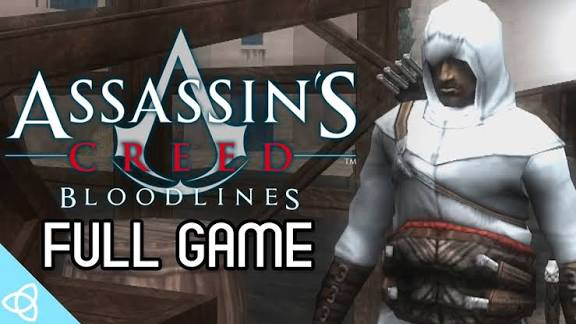
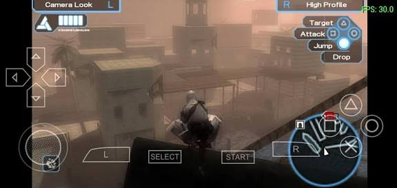
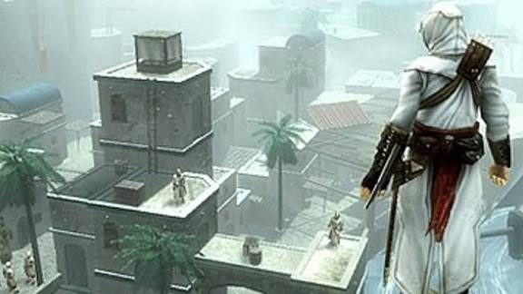
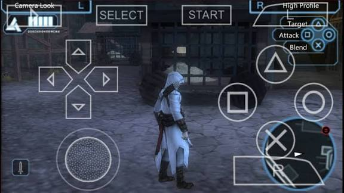

Best PSP Games for PPSSPP Emulator
Best PSP Games for PPSSPP Emulator

Assassin’s Creed: Bloodlines is one of the premier action-adventure titles for the PSP, bringing the classic Assassin’s Creed franchise experience to the PPSSPP emulator on Android. The game continues the story of Altaïr Ibn-La'Ahad, set immediately after the events of the first Assassin’s Creed, further deepening the conflict between Assassins and Templars.

After eliminating the key Templar leaders in the Holy Land, Altaïr discovers that a powerful Templar Grand Master remains alive. His name is Armand Bouchart, and he represents a massive new threat. To thwart the Templars' dark plans, Altaïr must travel to the island of Cyprus, where new enemies, secrets, and challenges await.

Throughout the journey, players explore various cities and regions of Cyprus, engaging in stealth missions, investigations, chases, and intense combat. The gameplay retains the series' core elements, such as silent assassinations, parkour/climbing, and the iconic Hidden Blade, alongside swords and other weapons for direct confrontations when stealth is no longer an option.
Check out the best ppsspp cheats codes
As the first franchise entry released for the PSP, Bloodlines is essential for understanding Altaïr’s legacy and the fate of the final Templars who fled the Holy Land. Despite the portable console's limitations, the game delivers impressive graphics, an immersive historical atmosphere, and a narrative faithful to the Assassin’s Creed universe.

Running smoothly on PPSSPP for Android, this title is an excellent choice for franchise fans and anyone seeking an action-packed game with a rich story, exploration, and classic assassin mechanics.
Call Of Duty-Roads To Victory